Chapitre 8
[[ Note du Traducteur : Thomas Stevens est le premier cycliste à avoir fait le tour du monde ; par la même occasion il est le premier cycliste à avoir traversé les Etats-Unis d'océan à océan. ]]
Bulgarie, Roumélie et entrée en Turquie.
[[ Ndt : quelques précisions concernant la Bulgarie et la Roumélie : la Bulgarie a été entièrement conquise par l'Empire Ottoman en 1396. A partir du traité de Berlin en 1878, elle devient une principauté vassale (sous la suzeraineté) de l'Empire Ottoman.
La route qui s'enfonce en Bulgarie depuis le poste de douane de Zaribrod est relativement facile pendant plusieurs kilomètres jusqu'à ce que j'arrive à des voies montagneuses et dégradées ; c'est un pays de chèvres et de bergers. Une averse menaçante couvre les montagnes devant moi mais n'atteint pas les environs que je suis en train de traverser ; elle passe au sud et rend les routes impraticables sur plusieurs miles. Plus haut dans les montagnes je rencontre plus d'une fois un « express national bulgare » : des caravaves de chevaux transportant des marchandises, qui font la navette entre Sofia et Niš. La plupart de ces animaux sont trop lourdement chargés pour avoir l'idée de réagir à l'apparition de quoi que ce soit sur la route, mais quelques-uns de ces équipages reviennent de Sofia avec seulement leur bât ; et l'un d'eux, sans aucun doute heureux au-delà de toute mesure de cette agilité inaccoutumée, à mon approche se libère de toute retenue et dégringole les pentes, les caravaniers effarés se lancent à toute jambe derrière. Dans cette partie du monde, les gens regardent avec une placidité louable n'importe quel évènement de la sorte : au lieu de perdre du temps à y chercher motif à querelle, ils s'occupent à rassembler la caravane dispersée comme si la débandade avait été la plus naturelle des choses.
La Bulgarie – tout au moins par la route où je passe – est une terre de montagnes et de hauts plateaux, les habitants, que je devrais appeler les « ranchers de l'Orient », dans leur aspect et leur conduite supportent le même type de comparaison avec la mollesse du sarcleur de céréale comparée à la vigueur du faucheur de la vallée de la Morava [[ Ndt : la Morava est une rivière de Serbie ; c'est une vallée fertile ]], que le cow-boy de Niobrara [[ Ndt : petit village du Nebraska fondé en 1856, d'environ 500 habitants en 1885 ; situé au bord de la rivière Niobrara à la confluence avec la rivière Missouri, il a été souvent inondé. Ref : Wikipedia https://tinyurl.com/y7rcge8f ]] comparé à l'expoitant agricole du Nebraska [[ Ndt : État américain situé dans les Grandes Plaines ; dans les annés 1880, le Nebraska grâce à l'agriculture extensive et l'utilisation de techniques modernes (à l'époque) était considéré par les colons comme la meilleure région agricole ; les vastes prairies étaient également appréciées pour le pâturage des troupeaux. Ref : Wikipedia https://tinyurl.com/63s4lu3 ]]. En montagne je rencontre des troupeaux de chèvres à la charge d'hommes qui se préoccupent peu de raffinements, les hautes plaines sont parsemées de troupeaux de poneys qui requièrent une surveillance constante dans l'intérêt des champs de céréales ici et là. Pour le déjeuner je fais halte à une improbable mehana, à proximité d'un groupe de masures boueuses, que, je suppose, les Bulgares considèrent comme un village et je suis gratifié du plus noir des pains noirs, dans la composition duquel le sable n'est pas des moindre, ainsi que des restes d'un poulet tué et cuisiné à une période indéterminée du passé. De tous les endroits inventés dans le monde pour dégoûter un affamé, un voyageur dans l'expectative, la mehana bulgare est le plus abominable. Le pain noir et le mastic, (une composition de gomme de mastic et de rhum de Boston ainsi qu'on m'en informe) [[ Ndt : s'agissait-il vraiment de rhum importé de Boston ou d'une production locale ? Quoiqu'il en soit la consommation de rhum était très importante à Boston, ainsi que dans tout l'Etat du Massachusetts, dès le milieu du 18eme siècle. Ref : Reteurs.com https://tinyurl.com/yaewqbg6 ]] paraissent être les seules choses ordinairement disponibles, et tout ce qui concerne cet endroit montre sans équivoque l'ignorance du propriétaire des notions les plus simples de propreté.
Un orage est en train de se former dans les montagnes que j'ai traversées dernièrement, et, après avoir avalé mon repoussant déjeuner je me hâte de monter en selle et me transporte vers Sofia, distante de trente kilomètres. La route n'est pas extraordinaire, c'est le moins qu'on puisse dire, mais un vent mugissant soufflant depuis l'orage en formation me pousse rapidement, malgré les déformations, les ornières et le mauvais état général de cette route. La région consiste en plateaux élevés, dont seule une petite partie est cultivée ; plus d'une fois dans les environs de hauts congères de neige sont encore persistants et les brises froides de la montagne me rappellent les Plaines de Laramie. Je rencontre fréquemment des hommes et des femmes rentrant de Sofia à leur foyer à cheval. Les femmes sont ornées des perles, des colifichets et des breloques des semi-civilisés comme pourraient l'être les squaws favorites de Squatting Beaver et de Sitting Bull [[ Ndt : il s'agit sans doute de Big Beaver, chef cheyenne (squatting et big peuvent signifier tous deux : gros, fort) ; Sitting Bull était un chef sioux. Tous deux ont participé à la bataille de Little Bighorn contre les troupes du colonel George Custer, le 25 juin 1876 ]] et de plus imitent leurs soeurs à la peau cuivrée du Far-West en montant leurs chevaux comme les hommes [[ Ndt : assises à califourchon et non en amazone ]]. Mais en matière de sens artistique et de profusion de décoration la squaw est loin derrière la paysanne bulgare. Les vêtements des hommes sont une combinaison entre la peau de mouton et un matériau laineux, épais, grossier, filé par les femmes et coupé d'aprés des patrons que leurs ancêtres ont apportés avec eux il y a des siècles quand ils envahirent l'Europe pour la première fois [[ Ndt : allusion peut-être aux Huns, peuple nomade d'Asie centrale, dont la présence en Europe est attestée à partir du IVe siècle ; ou aux Proto-Bulgares, peuples turcs qui s'établissent dans cette région d'Europe à partir du VIe siècle ]]. La selle bulgare, comme tout le reste ici, est une chose de fabrication grossière, qui peut servir de bât ou pour la monte, une fabrication rudimentaire, peu maniable et qui en elle-même est déjà un fardeau pour le cheval.
Femmes bulgares en costume tradionnel de la région de Sofia
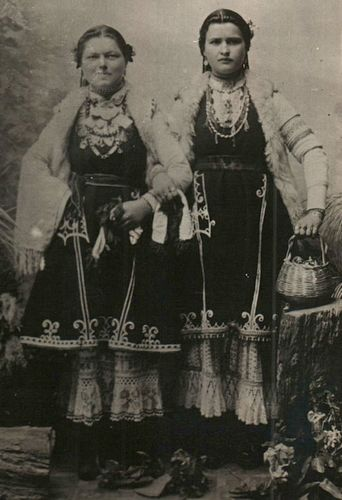
Source : WikipediaDomaine public
Bulgare en costume tradionnel de la région de Sofia
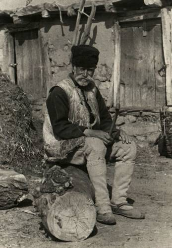
Source : WikipediaDomaine public
À 4.30 l'après-midi j'arrive à Sofia, la capitale Bulgare, après avoir couvert aujourd'hui cent dix kilomètres, malgré la boue, les montagnes et des routes loins d´être des meilleures. Je dois m'adresser à un négociant pour changer de la monnaie, les quelques francs que j'ai n'ayant pas cours en Bulgarie ; l'israélite qui à Niš se réservait un bénéfice de deux francs par pound semble l'incarnation de l'équité comparé à son semblable ici à Sofia, au nez aquilin et au visage flétri, qui veut deux francs serbes pour le change de chaque pièce bulgare de même valeur intrinsèque ; le mieux que j'obtiens en allant chez différents négociants sont cinq francs pour le change de sept ; pourtant la frontière serbe n'est qu'à soixante kilomètres de distance, avec des diligences arrivant tous les jours ; et chacune de ces pièces a la même valeur commerciale. A l'hôtel Concorde, à Sofia, au lieu d'assiettes la nourriture est servie sur des rondins de bois plats de la taille d'une soucoupe – le « tranchoir » de l'époque d'Henri VIII, – en face de mois deux citoyens de bonne présentation sont en train de souper de pain noir et de tranches de concombre, tous deux extrayant les tranches de concombre d'un bol de bois avec leurs doigts.
La façon de vivre dans la capitale bulgare mène à la comparaison légitime et relative avec la vie du pays qu'elle représente. Un des gardes du corps du Prince Alexandre [[ Ndt : Alexandre of Battenberg ou Alexandre Ier de Bulgarie (1857-1893)est le premier souverain (de 1879 à 1886) de la principauté de Bulgarie. La Principauté de Bulgarie, créée par le Traité de Berlin de 1878 était de droit sous la suzeraineté de l'Empire Ottoman mais de fait autonome. C'est le 5 octobre 1908 qu'elle proclame son indépendance et la création du Royaume de Bulgarie. ]], qu'on m'a montré dans le bazar, ressemble à un semi-barbare, paré du costume national couvert d'ornementations, les grands pistolets orientaux enfoncés dans sa ceinture, son turban passementé d'or dressé sur un côté de sa tête et une imposante moustache.
Sofia en 1884
Environ 30000 habitants lors du passage de Stevens
Source : gallica.bnf.fr https://tinyurl.com/Sofia1884
Un militaire bulgare, fin du XIXe siècle
donne une idée de l'apparence du garde du corps
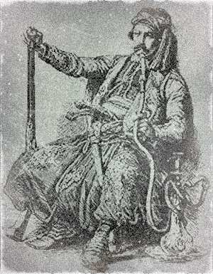
Alexandre Ier de Bulgarie
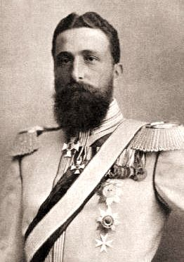
Source : WikipediaDomaine public
Pistolet ottoman, XIXe siècle
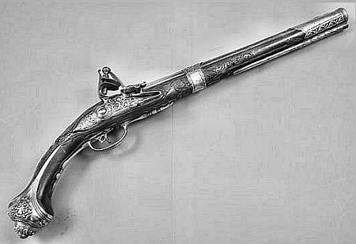
Les soldats ici, même ces plus chanceux en comparaison qui montent la guarde à l'entrée du palais princier, semblent ne pas avoir eu de nouvel uniforme depuis des années et avoir même perdu espoir depuis longtemps d'en avoir un. Une guerre et une alliance avec une nation puissante qui troquerait leur accoutrement pour des uniformes respectables serait vraisemblabement une issue bienvenue pour la plupart d'entre eux.
Après souper je flâne dans le bazar et j'observe que les rues, la place du palais, en fait tout site entièrement illuminé, sauf les minarets et les mosquées qui sont toujours éclairés au moyen d'huile végétale, sont éclairés avec le pétrole américain, gaz et charbon étant ignorés dans la capitale bulgare. Il y a un manque évident de normes dans tout ce que ces gens font. De ce que j'observe j'ai tendance à penser qu'ils ne prêtent aucune attention aux divisions du temps communément acceptées, mais que leurs actions sont gouvernées par la lumière et l'obscurité. Il n'y a pas de journée de travail de huit heures ni de dix heures ici ; je crois réellement que les classes laborieuses travaillent tout le temps, sauf quand elles font une pause pour manger du pain noir et pour trois ou quatre heures de sommeil au cours de la nuit ; car, passant lentement dans les rues sur mon bicycle à cinq heures au matin suivant, les mêmes personnes que j'ai observées occupées à diverses activités au bazar, sont maintenant ici tout aussi affairées que si elles avaient tenu ce rythme toute la nuit ; même chose pour des ouvriers construisant une maison ; ils étaient en train de piocher hier soir à neuf heures, à la lumière tremblotante de petites lampes à pétrole, et ce matin à cing heures ils n'ont pas vraiment l'air d'hommes qui viennent juste de commencer leur journée. L'Oriental, avec ses méthodes primitives et son attachement tenace aux façons de faire de ses ancêtres, doit sans doute travailler selon ces horaires étendus pour faire le moindre progrès. Quoiqu'il en soit, dans tout l'Orient j'ai été frappé par l'ardeur au travail des vrais classes laborieuses ; mais l'Oriental est déplorablement déficient de sens pratique et d'esprit inventif.
En route vers la sortie de la ville je fais une pause au bazar pour boire du lait chaud et manger une baguette de pain blanc, réconfortante, car le temps ce matin est plutôt inclément et frais ; le vent souffle encore par rafales et une compagnie de cavalerie, sortie pour l'exercice, est emmitouflée dans ses lourds manteaux gris comme si c'était le milieu de l'hiver au lieu du vingt-trois juin. Sur la route je croise des paysans aux vêtements grossiers venant de fermes voisines, qui transportent de grands bidons de lait à Sofia. J'arrête plusieurs d'entre eux pour goûter la qualité de leur lait et il s'agit invariablement de lait non filtré, quant aux récipients ils semblent ne pas avoir subi de stérilisation depuis un bon moment. D'autres transportent sur leurs épaules des sacs de jute remplis de fromage frais dont le petit-lait dégouline par instants sur leur dos. La propreté est soeur de la dévotion ; mais les Bulgares semblent être encore à plusieurs étapes de l'une et de l'autre. Ils ont surtout besoin de l'influence civilisatrice du savon et si les missionnaires ne peuvent pas les convertir au christianisme ou les civiliser ce ne serait pas une mauvaise idée de tenter d'implanter une ou deux fabriques de savon dans le pays.
La sauvagerie persiste sous le vernis de civilisation des plateaux venteux de Bulgarie, mais le salut approche sous la forme d'une extension du chemin de fer de Roumélie au sud pour faire la liaison avec la Serbie à la frontière nord des Balkans. Pendant des années le département de marchandises de ce chemin de fer pionnier devra affronter la concurrence des convois de boeufs et des chariots gémissants et grinçants ; vu qu'en général les actionnaires et les directeurs ne se satisfont pas d'une diète exclusivement de pain noir avec un concombre flétri les dimanches pour varier, comme le fait le conducteur de chariot bulgare, et vu que les locomotives ne peuvent profiter gratuitement de l'herbe sur les flancs des montagnes, la concurrence ne sera peut-être pas aussi injuste qu'on pourrait l'imaginer.
La Roumélie en juin 1885
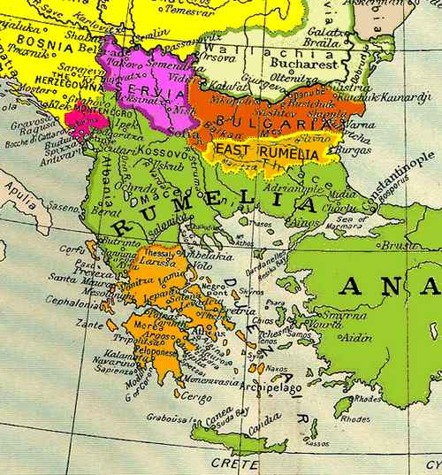
Traction de fret par boeufs dans les Balkans
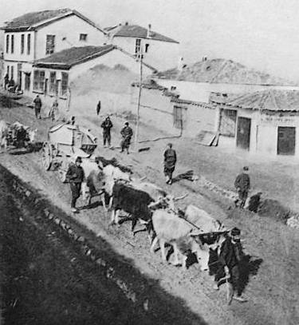
Source : The Balkan Peninsula, sur Projet Gutenberg https://tinyurl.com/y9zr2nme
Ce matin je rencontre de longs convois de ces attelages de boeufs remorquant du fret et du bois de construction depuis les terminus du chemin de fer en Roumélie jusqu'à Sofia. Les conducteurs portent de longs manteaux gris d'une étoffe épaisse avec une capuche couvrant la tête, un vêtement lourd et pratique qui protège à la fois de la pluie et du froid sur la route et la nuit sert de couverture et de matelas ; pour ce faire le conducteur laisse les boeufs sans attache sur la pente du côté du pâturage et après avoir englouti un morceau de pain noir il installe du côté du vent une texture d'osier coupe-vent sur le chariot, s'enroule dans son grand manteau et dort bruyamment. À l'occasion, en plus des convois de boeufs, de longs convois en désordre de chevaux de bât et d'ânes occupent toute la route ; ils transportent du bois de chauffage et du charbon en provenance des montagnes, ou du vin et des liqueurs en provenance de Roumélie, dans des fûts longs et étroits ; cependant que d'autres sont chargés de ballots et de caisses de marchandises diverses, hors de proportion avec leur propre gabarit.
La route au sud de Sofia est abominable, construite de terre et de gros cailloux à l'état naturel ; elle n'a pas été entretenue depuis des années et le piétinement des convois de chevaux et de boeufs qui se traînent en permanence sur cette route a évacué toute la poussière au long des saisons lors des périodes de pluie, laissant une surface dans un état pitoyable d'ornières, de trous et de couches épaisses de pierres protubérantes. C'est la pire portion de route que j'aie rencontrée dans toute l'Europe ; même si elle est cyclable ce matin par une personne prudente, on risque et on provoque le désastre à chaque tour de roue. « Old Boeras » [[ Ndt : le « Vieux Boreas », Boreas était le dieu grec du vent froid du nord. Ref : Wikipedia https://tinyurl.com/ycs5k4qk ]] arrive en mugissant des montagnes du nord et me pousse le long des ornières, des trous et des pierres, de la plus insouciante des façons, me fournissant toute la force propulsive nécessaire et me laissant sans rien d'autre à faire que garder un oeil vigilant sur les endroits brise-cou juste devant moi.
En Serbie, les paysans sur les routes dans leurs chariots, quand ils me voyaient approcher, incertains de la nature de mon véhicule et de la largeur dont j'avais besoin, s'écartaient souvent hors de la chaussée ; parfois, quand ils négligeaient cette précaution et que leurs attelages commençaient à se montrer rétifs pendant que j'approchais, les hommes semblaient à ce moment perdre leur bons sens et criaient pour annoncer le danger, comme si quelque péril inconnu planait sur eux. J'ai vu des femmes commencer à se lamenter dévotement comme si elles croyaient que je chevauchais une scie circulaire dévorante sur le point de les atteindre de son tourbillon, lacérer attelage, chariot et tout laisser déchiqueté. Mais les Bulgares n'ont pas l'air de se préoccuper beaucoup si je vais ou non les couper en deux ; ils sont beaucoup moins enclins à crier sur les routes, hommes et femmes semblent être faits d'un matériau plus dur que les Serbes et les Slavons. Ils paraissent plusieurs degrés moins civilisés que leurs voisins plus au nord, à en juger d'après leur aspect général et leurs manières. Toutefois, ils se comportent pacifiquement, sont raisonnablement courtois envers moi et le bicycle, et personnellement j'apprécie plutôt leurs manières rudes et gauches. Bien que leur tempéramment soit grossier et tapageur comparé au reste de L'Europe, ils ont l'air globalement des gens de bon caractère. Nous, occidentaux, nous entendons rarement parler des Bulgares sauf en temps de guerre, et c'est généralement lié à des atrocités qui fournissent matière à sensation pour les hebdomadaires illustrés ; ce pourquoi, de rouler seul, je m'étais plutôt attendu à passer des moments difficiles. Mais, au lieu de quitter le pays estafilé et balafré comme un étudiant de Heidelberg, j'émerge de leur pays sans rien de plus sérieux qu'une bonne et saine agitation due à leur routes inconvenables et leurs vents hurlants, quant à ma prévention contre le pain noir au sable elle est en partie surmontée du fait d'avoir du choisir entre manger ça ou rien [[ Ndt : Heidelberg est une ville d'Allemagne où se trouve la plus ancienne université allemande. Les sociétés étudiantes jouaient un rôle important, notamment fin XIXe et début du XXe diècle ; à cette époque, la Mensur, un combat d'escrime pratiqué face nue, y était couramment pratiquée. Le fait d'avoir une balafre au visage était alors considéré comme une preuve de courage. Ref : Wikipedia https://tinyurl.com/y9qwndeu ]].
Mensur entre étudiants allemands (années 1900)
peinture de Georg Mühlberg (1863-1925)
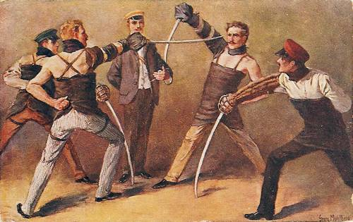
Source : WikipediaDomaine public
La Bulgarie est une principauté sous la suzeraineté du sultan, auquel elle est supposée payer un tribut annuel ; mais la suzeraineté ne s'impose que légèrement sur ce peuple, vu qu'il fait à peu près ce qui lui plait ; il ne se préoccupe jamais du tribut, se contentant de l'ajouter à la note quand vient le moment de le payer. Les Turcs pourraient tout aussi bien annuler l'endettement à tout moment, car ils pourraient en fin de compte devoir se contenter de leur réclamation pour tout paiement.
Une averse soudaine près de la frontière de Roumélie m'amène à trouver refuge dans une mehana peu engageante, pendant deux heures déplaisantes, à midi – une mehana où la nourriture proposée arracherait un « Ugh! » à un indien d'Amérique – où les seuls occupants sont un Bulgare aux yeux troubles dans des vêtements hors d'âge en peau de mouton, dont le maintien signale clairement un goût trop prononcé pour le mastic, et un chaton noir à l'air mécontent [[ Ndt : le mastic dont il s'agit ici est vraisemblablement la Mastika, forte liqueur Bulgare aromatisée à l'anis ]]. De peur qu'il arrive quelque chose qui me contraigne à passer la nuit ici, j'endosse mon imperméable dès que la pluie diminue un peu et fanfaronne en me lançant tête baissée à travers la boue vers Ihtiman [[ Ndt : Ihtiman à cette époque (juin 1885) était en Roumélie Orientale. ]] qui, selon ma carte est juste de ce côté de la chaîne de montagnes Kodja Balkan [[ Ndt : il s'agit de la chaîne de montagnes Sredna Gora ]] qui s'élève en crête sombres boisées pas très loin en avant, vers le sud. La boue et la pluie combinent pour rendre les choses aussi désagréables que possible, mais avant qu'il soit trois heures j'arrive à Ihtiman, pour découvrir que je suis dans la Province de Roumélie et je suis une fois de plus requis de produire mon passeport.
J'avance à bon rythme maintenant dans ce territoire qui il y a peu était sous la domination complète de « l'indicible Turc » – indicible, au fait, à plus d'un titre, pour votre serviteur [[ Ndt : "jeux de mots" sur le sens de indicible : qui ne peut être dit par des mots à cause de son caractères étrange (le peuple turc), et le fait qu'il (Stevens) ne parle pas Turc ]] – et qui d'une certaine façon l'est encore maintenant, mais je n'ai vu encore que très peu la « mystérieuse femme voilée » . Les Bulgares sont chrétiens quand ils « sont » quelque chose, toutefois la grande majorité d'entre eux ne « sont rien » religieusement. Je trouve ici à Ihtiman une mehana relativement confortable, dont le propriétaire, qui parle allemand, comprend rapidement le sens de hune-hen fabrica ; mais je dois me passer des cerises.
Cette matinée la boue est le principal composant de la route à la sortie de Ihtiman et dans les montagnes de la Kodja. La foule curieuse d'Ihtimanites qui me suit le long des trous boueux et de la saleté de ses rues natales pour voir ce qui va se passer quand je m'éloignerai d'ici est peu récompensée de son effort ; le mieux que je puisse faire c'est de sprinter par intermittence quelques centaines de yards dans la boue, ce que je fais uniquement par considération pour leur curiosité ; il est assez désagréable de décevoir une foule de villageois qui sont dans l'expectative de suivre et de voir chacun de mes mouvements, et se demandent, par ignorance, pourquoi je marche au lieu de rouler. L'avancée sur les routes boueuse de la Kodja est lente et fatigante, mais, une fois que commence la descente vers la vallée de la Maritza j'arrive sur une surface un peu plus cyclable, malgré les innombrables trous et les nombreuses pierres qui traînent et rendent cette opération quelque peu risquée, considérant que la route court en général juste le long des précipices. Sur ces routes de montagne je croise des ânes de bât qui quelquefois occupent tout le chemin, avancent obstinément et avec indifférence même en des endroits où je n'ai le choix qu'entre grimper sur une roche sur un côté de la route ou me jeter dans le précipice de l'autre. J'arrive en général à m'arranger pour les croiser, en mettant le bicycle d'un côté, prenant appui dessus et les repoussant un par un pendant qu'ils passent. Certains de ces ânes rouméliens sont parmi les plus petites créatures que j'aie jamais vues ; mais ils semblent capables de gravir avec d'énormes charges ces routes de montagnes escarpées. J'en croise un ce matin qui transporte des ballots de marchandises beaucoup plus volumineuses que lui, avec un Roumélien corpulent, dont les pieds par moment traînent sur le sol, perché sur sa croupe ; l'homme à l'air tout à fait capable de porter à la fois l'âne et sa cargaison.
Peu après midi j'arrive dans la vallée chaude et fertile de la Maritza [[ Ndt : fleuve de la péninsule balkanique qui prend naissance dans les montagnes de Rila en Bulgarie ; en français est aussi orthographié Maritsa. Ref : Wikipedia https://tinyurl.com/yajq6z5v ]] et je ne suis pas mécontent de voir qu'elle est parcourue par une route décemment macadamisée ; cependant, vu qu'il a plu très abondamment dans les montagnes, cette vallée a évidemment subi les effets d'un petit déluge et nombre d'étendues sont couvertes de boue et de sable dévalés des monts adjacents ; dans les aires cultivées des haut-plateaux bulgares les champs de céréales sont encore verts, mais la récolte a déjà commencé dans la vallée plus chaude de la Maritza et des équipes de paysans rouméliens sont dans les champs, maniant vigoureusement les faucilles pour sauver leur récolte de blé et de seigle que le vent a sérieusement couchée. Avant même d'avoir roulé beaucoup de miles dans la vallée sur cette route plane, une douzaine de minarets pointus surgissent en avant, et à quatre heures je descends de machine aux limites des rues presqu'infranchissables de Tatar Bazardjik [[ Ndt : Pazardjik, environ 15000 habitants lors du passage de Stevens, fondée par les Tatars en 1485. Durant l'empire ottoman la ville comptait 18 mosquées. Le nom de la ville vient du persan Parzacik (petit marché). Ref : Wikipedia https://tinyurl.com/Pazardjik ]], une petite ville plutôt animée dans le sens où les villes orientales sont animées, c'est à dire des bazars bien fournis où affluent des foules hétéroclites. Plusieurs groupes de Gitans sont installés sur les rives de la Maritza, juste aprés les limites de Tatar Bazardjik ; un attroupement de jeunes bronzés à demi-nus me font bénéficier sans raison d'une pluie de pierres alors que je passe à proximité et plusieurs chiens bâtards décharnés aux regards mauvais me suivent pendant un bout de trajet avec des cris encore plus menaçants. Les chiens en Orient semblent être tous principalement d'une même race, authentiquement mongole, sans rien de l'énergie et du courage des animaux avec lesquels nous sommes familiers. Les Gitans sont même plus nombreux au sud de la Save [[ Ndt : rappelons qu'il s'agit d'un affluent de la rive droite du Danube ]] qu'en Autriche-Hongrie, mais depuis que suis sorti de Slavonie ils ne m'ont jamais importuné par des sollicitations d'aumône. On rencontre rarement des voyageurs originaires d'autres pays par ici et je suppose que les Romanichels vagabondants ont appris depuis longtemps l'inutilité de demander l'aumône aux gens du pays ; cependant, vu qu'ils s'abstiennent scrupuleusement de tout ce qui s'apparente au travail, la façon dont ils s'arrangent pour vivre est une sorte de mystère.
Avant d'avoir fait cinq kilomètres depuis Tatar Bazardjik la pluie commence à tomber et il n'y a ni maison ni autre abri visible nulle part devant. Les villages agricoles sont tous le long de la rivière et les routes passent mile après mile au milieu de champs de blé et de seigle. J'avance avec détermination sous une averse torrentielle qui fait peu de cas de mon fin vêtement de tissu, qui en la circonstance m'évite tout juste d'avoir la peau trempée avant que j'aperçoive une mehana [[ rappelons qu'il s'agit d'un nom qui dans la région désigne hôtel, auberge etc... ]] plus que bienvenue et me rende en ce lieu, prêt à accepter, avec la gratitude de circonstance, n'importe quel hébergement qu'on y propose. Elle se révèle plusieurs degrés supérieure à l'institution bulgare moyenne du même nom, le propriétaire me faisant presque ouvrir les yeux grand d'étonnement en sortant une boite de sardines de France et du pain à la couleur nettement moins foncée que ce à quoi je m'étais attendu, au regard d'une expérience antérieure ; pour lit il me fournit un des larges et épais manteaux dont j'ai déjà parlé, qui, avec l'ample capuche, enveloppe toute la personne dans un abri qui défie à la fois l'humidité et le froid. Me voilà équipé de cet habit disgracieux mais néanmoins acceptable et de l'heureux privilège d'occuper le sol d'une petite dépendance en compagnie de plusieurs convoyeurs de fret de rude apparence attifés de même manière ; je passe une nuit somme toute pas trop pénible, le crépitement de la pluie contre la seule petite fenêtre bridant les pensées peu plaisantes qui ont tendances à venir spontanément quand le ronflement de mes compagnons de chambrée devient sévèrement agaçants. Je crois être la seule personne de toute la compagnie qui ne ronfle pas et quand je sors de mon sommeil intermittent à quatre heures du matin et constate que la pluie ne crépite plus contre la fenêtre, je me lève, et entreprends mon voyage vers Philippopolis, la ville que j'avais tenté d'atteindre hier.
C'est après avoir traversé la chaîne des Kodja et être descendu dans la vallée de la Maritza qu'on trouve chez les gens une bizarrerie qui, jusqu'à ce qu'on y soit accoutumé, cause une perplexité non des moindres et nombre de confusions ridicules. Le mouvement de la tête qui chez nous signifie une réponse négative, signifie exactement le contraire chez la population de la vallée de la Maritza ; et j'ai été déconcerté beaucoup plus d'une fois hier après-midi quand je me renseignais si j'étais sur la bonne route et quand je déambulais aux étalages de fruits à Tatar Bazardjik. On n'est jamais tout à fait sûr d´être sur la bonne voie quand, après s'être informé auprès d'un autochtone si c'est bien la route pour Mustapha Pacha ou Philippopolis il répond d'un mouvement vigoureux de la tête ; et bien qu'on soit bientòt accoutumé à cette particularité et qu'on la considère pour ce qu'elle signifie, il n'est pas aussi facile de l'appliquer soi-même. Cette curieuse coutume semble prévaloir seulement chez les habitants de cette vallée spécifique, car après en être sorti à Adrianople je n'en verrai plus trace. Une autre particularité dans toute la partie Est, et en fait dans une bonne partie de l'Europe Centrale, c'est que, au lieu du « whoa » [[ Ndt : interjection anglaise qui signifie "hoo" ]] que nous employons avec les chevaux, le cocher cacarde comme une oie [[ Ndt : cardement : cri de l'oie. Ref : voir carcader sur cnrtl.fr https://tinyurl.com/cacarder ]].
L'averse d'hier soir n'a causé que peu de dommages à la route entre la mehana et Philippopolis, la capitale de la Roumélie, et j'arrive aux limites de cette ville en quelque chose comme environ deux heures. Philippopolis [[ Ndt : ville qui porte de nos jours le nom de Plovdiv ; elle comptait environ 30000 habitants lors du passage de Stevens. En 1878 elle fut soustraite au pouvoir ottoman par l'armée russe et est devenue la capitale de la Roumélie Orientale ; en septembre 1885 (soit trois mois après le passage de Stevens), Plovdiv et la Roumélie Orientale ont été unies à la Bulgarie ]] est des plus joliment située, construite sur et autour d'un ensemble de plusieurs monts rocheux ; une position qui, avec l'abondance d'arbres ondoyants, communique une impression agréable et pittoresque. Avec la vingtaine de minarets dirigés vers le ciel parmi le feuillage verdoyant, la scène est complètement orientale ; toutefois, comme pour toutes les villes de l'Est, « l'´rloignement prête de l'enchantement au regard » [[ Ndt : 'distance lends enchantment to the view' citation tirée de Les Plaisirs de l'Espérance du poète écossais Thomas Campbell (1777-1844). Ref : Wikipedia https://tinyurl.com/Campbell-poet ]].
Tout le long de la vallée de la Maritza, et dans un nombre moindre s'étendant au sud et à l'est sur les plaines vallonneuses de l'Adrianople, on voit souvent de nombreux monticules préhistoriques, de vingt-cinq ou trente pieds de haut (sept mètres cinquante ou neuf mètres), et à peu près du même diamètre. Parfois en groupes, parfois isolés, ces monts se rencontrent si fréquemment qu'on peut souvent en compter douze ensemble. Plusieurs ont été excavés et des restes humains découverts couchés sous de larges plaques de céramique grossière disposées comme un V inversé, ainsi , évidemment destinées à servir de protection pour préserver les corps. Une autre caractéristique du paysage, une qui ne manque pas de toucher le voyageur attentif par son côté mélancolique, ce sont les cimetières mahométans. À l'extérieur de chaque ville et près de chaque village on trouve de larges aires de terrain densément parsemées de blocs de roche grossièrement façonnés et dressés ; cités des morts beaucoup plus peuplées que les demeures des vivants adjacentes. On peut se tenir sur l'une des hauteurs de Philippopolis et contempler les monts et les vallées à l'entour abondamment couverts de ces rappels rudimentaires de notre destinée universelle. Hier presque encore les Turcs occcupaient ces territoires, et avaient coutume de se divertir sur tout « chien de chrétien » qui osait profaner par sa présence impie un de ces cimetières musulmans ; mais maintenant ils ne sont plus entourés par la clôture protectrice ou les restrictions morales de musulmans dominants, et les moutons, les vaches et les chèvres de « l'infidèle » paissent au milieu d'eux ; et oh, mânes de Mahomet ! les cochons aussi frottent leur dos contre les tombes et fouillent autour, comme bon leur semble, déterrant parfois des crânes et des os, vu que c'est la coutume turque de ne pas enterrer à une grande profondeur. Le grand nombre et l'étendue de ces cimetières semblent pour le spectateur étranger comme une éloquente preuve contre un peuple dont la loi et la religion sont fondées sur l'épée.
Philippopolis, autrefois
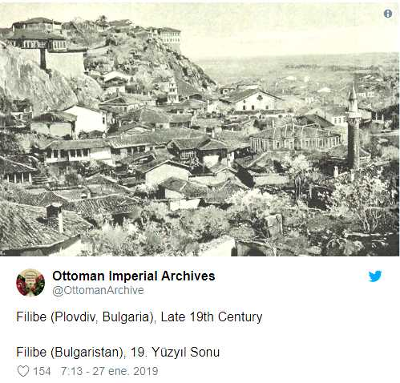
Pendant que je suis en train de prendre un petit-déjeuner de pain et de lait au bazar de Philippopolis un galopin arabe entre précipitamment, et, avec des gesticulations nerveuses vers le bicycle, que j'ai laissé à l'extérieur par la force des choses, et les cris de « Monsieur, monsieur, (Ndt : en français dans le texte original) » signale clairement qu'il se passe quelque chose de grave en relation avec la machine. Sortant aussitôt, je découvre que, bien que je l'avais laissé appuyée debout sur ce qui ressemblait piètrement à un trottoir, elle est en danger imminent de connaître une fin malheureuse à cause d'un âne avec une charge brinquebalante, qui, avec son chargement, occupe véritablement toute la rue étroite, y compris les trottoirs, et se fraye lentement son chemin au milieu des trous boueux et des pavés saillants. Et encore Philippopolis s'est énormément améliorée depuis qu'elle est passée de ville turque à chrétienne, me signale-t-on ; la Croix a non seulement triomphé sur le Croissant à Philippopolis, mais son influence est en train de changer rapidement la condition et l'aspect des rues. Il n'y a pas de doute quant aux améliorations, mais elles sont en ce moment plus notables dans les faubourgs, près du consulat anglais. La pluie menace à nouveau alors que je fraye mon chemin à travers les rues tortueuses de Philippopolis vers la route d'Adrianople. Véritablement, j'ai l'impression que ces jours sont entièrement occupés à jouer à cache-cache avec les éléments ; mais en Roumélie en cette saison c'est ou la pluie ou une chaleur insupportable, et peut-être, après-tout, devrais-je être reconnaissant d'avoir à affronter la première plutôt que cette dernière. Je dois supporter deux orages dans la matinée, et pour le déjeuner j'arrive à une mehana où, en plus d'oeufs cuits dans la braise et de pain assez bon, on me propose une serviette qui a été utilisée quelques fois ; un trait de civilisation tout à fait réconfortant.
La pluie menaçante de la matinée se montre de nouveau et marque le voyage de l'après-midi, et pendant que je fais halte à un petit village les habitants me prennent en fait pour un opérateur ambulant et collectent entre eux une poignée de petites pièces de cuivre, de la taille et l'épaisseur d'une pièce en or de vingt-cinq cents, dont il faudrait au moins une vingtaine pour atteindre la valeur d'une pièce d'un cent américain, et me les offrent pour que je fasse une prestation. Après que j'ai secoué ma tête pour « non », mouvement que les villageois prennent naturellement pour « oui » conformément à leur propre coutume, je passe un moment assez intéressant à leur faire comprendre que je ne suis pas un charlatan voyageant d'un village de Roumélie à un autre, vivant de deux cents de pain roux foncé per diem (locution latine : par jour), et donnant des représentations pour environ trois cents la prestation.
Entre ma halte et la nuit j'atteins le village de Cauheme, dans lequel je rencontre une mehana, où, bien que l'hébergement soit des plus sommaires, le propriétaire est aimablement disposé et, en outre, quelqu'un foncièrement honnête, qui me fournit un tapis de roseau et un coussin et rend les choses aussi commodes et agréables que possible. Manger des concombres crus comme nous nous mangeons des pommes ou des poires apparaît être universel en Europe Orientale ; fréquemment, en Bulgarie et en Roumélie, j'ai remarqué des gens, aussi bien vieux que jeunes, rongeant un concombre avec la plus grande délectation, mangeant la peau avec tout le reste, sans l'accompagnement d'aucun condiment.
Dans toute la Roumélie le déclin progressif du Croissant et la progression qui l'accompagne de la Croix est partout évident ; la composante chrétienne est maintenant prédominante et les autorités turques ne jouent qu'un rôle mineur dans le gouvernement des affaires intérieures. Assez naturellement, il ne convient pas au musulman de vivre au milieu de gens que sa religion et la coutume consacrée lui ont appris à regarder comme inférieurs, et en conséquence ces dernières années ont été un pliage général de tentes et de départs en catimini ; de nos jours ce n'est pas un évènement très rare qu'un village musulman entier emballe, armes et bagages, et que ses habitants déménagent en Asie Mineure [[ Ndt : il s'agit de la Turquie, avec laquelle la Roumélie avait une frontière ]], où le sultan leur octroie des étendues de territoire pour leur implantation. Entre les populations chrétiennes et musulmanes de ces régions il y a naturellement une certaine forme du principe « c'est du pareil au même », et dans certaines régions, où les musulmans ne sont plus qu'une petite minorité, les chrétiens sont même enclins à leur faire subir le même traitement que les Turcs leur faisaient subir auparavant.
Il y a peu de notion de ce que nous considérons les « bonnes manières » chez les villageois orientaux, et alors que je suis en train d'écrire quelques notes ce soir, les gens qui se pressent à la mehana à cause de ma présence insolite restent là à observer chaque mouvement de mon crayon, se bousculent sans précaution contre le banc et font des commentaires sur moi et le bicycle avec une volubilité qui m'empêche presque d'écrire. Les femmes de ces villages de Roumélie coiffent leurs cheveux avec une frange et les portent en deux longues nattes, ou bien tresssés en arrière enveloppés dans une coiffe retombante d'un matériau vaporeux ; de grosses boucles en argent, artistiquement gravées, probablement des biens de famille, ferment une ceinture autour de leur taille ; quand elles marchent pieds nus, rangées de perles, bracelets et colliers de pièces d'argent engendrent un incessant tintement. Le ciel s'éclaircit, la lune brille désormais magnifique avant que je m'étire sur mon lit rudimentaire la nuit venue, et le soleil brillant qui s'élève le matin suivant semble annoncer pour le moins un temps clément ; un signe qui cependant se montre trompeur avant la fin du jour.
A Khaskor [[ Ndt : il s'agit très certainement de Haskovo, qui comptait environ 14000 habitants lors du passage de Stevens. Ref : Wikipedia https://tinyurl.com/Xackobo Stevens transcrivait vraisemblablement en "phonétique" le nom de certaines villes; la ville était connue sous son nom turc Hasköy jusqu'au rattachement de la Roumélie Orientale avec la Bulgarie et en prononciation locale Hasköy se rapproche de Khaskhor... ]], à quelques quinze kilomètres de Cauheme, je peux me faire servir mon petit-déjeuner préféré, pain, lait et fruit et pendant que je suis en train de le prendre à l'intérieur un Turc loyal monte la garde avec vigilance près du bicycle, tenant résolument au large la foule indiscrète pendant que je me restaure. Ce matin les routes, bien que vallonnées, sont assez lisses et vers onze heures j'arrive à Hermouli (vraisemblablement Harmanli), la dernière ville en Roumélie, où, après qu'on m'ait demandé de présenter mon passeport, je suis requis de présenter mon permis de port de revolver par un lieutenant de gendarmerie (en français dans le texte original) prétentieux, la première fois que je suis embêté de la sorte en Europe. Pendant que j'explique, du mieux que je peux, que je n'ai pas un tel permis, et que pour un voyageur (en français dans le texte original) une autorisation écrite n'est pas nécessaire (chose dont toutefois je ne suis pas du tout certain, contrairement à ce que mes propos semblent indiquer), on me désarme avec politesse et je suis conduit au poste de police dans une salle de garde où pendant une trentaine de minutes j'ai le privilège de la compagnie exclusive d'un garde en uniforme et des sombres pensées d'une probable lourde amende si ce n'est de l'emprisonnement. Je suis enclin à croire après-tout qu'en m'arrêtant et en me retenant l'officier faisait simplement démonstration de son autorité à ses compatriotes hermanlites, attroupés pour moi et le bicycle, car, au bout d'une demi-heure, mon passeport et mon revolver me sont rendus et sans plus de questions ni d'explications je suis autorisé à partir sans problème.
Comme pour envenimer délibérément les choses, un village de Gitans a planté ses tentes et laisse ses ânes paître dans le dernier cimetière mahométan que je vois avant de franchir la frontière de Roumélie et d'entrer en Turquie à proprement parler, où dès le premier village, les manifestations générales de ce qui concerne la religion changent, comme si sa proximité avec la frontière rendait souhaitable les distinctions rigoristes. Au lieu de murs croulants et de minarets s'élevant vers le ciel, j'observe un groupe de femmes entièrement voilées en train de prier à l'extérieur d'une mosquée bien préservée, et priant sincèrement vu que même ma présence inédite et le bicycle notable ne sont suffisants pour détourner un moment leur attention de leurs dévotions, quoique celles que je rencontre sur la route regardent avec curiosité entre les plis de leur yashmak musulman [[ Ndt : rappelons que le yashmak est un type de voile turc, en toile fine et transparente, voir chapitre 7 ]]. Je suis préoccupé aujourd'hui face à un vent contraire très décourageant, les routes, bien que la plupart du temps praticables ne sont pas des meilleures. Sur la plus grande partie du trajet la route est macadamisée, route qui dans les jours prospères de la domination ottomane était sans aucun doute une splendide route principale, mais maintenent les mauvaises herbes et les chardons, preuves d'un traffic déclinant et de la proximité du chemin de fer roumélien, poussent au milieu de la chaussée et, trous et endroits impraticables font du cyclisme une épreuve d'attention.
Mustapha Pacha [[ Ndt : il s'agit de la ville qui porte maintenant le nom de Svilengrad et appartient à la Bulgarie. Ref : Wikipedia https://tinyurl.com/Svilengrad ]] est la première ville turque d'une certaine importance où j'arrive et ici encore mon passeport très nécessaire doit être exhibé ; mais les policiers de Mustapha Pacha ont l'air d'être d'une intelligence exceptionnelle et des types agréables.
Mustapha Pacha, autrefois
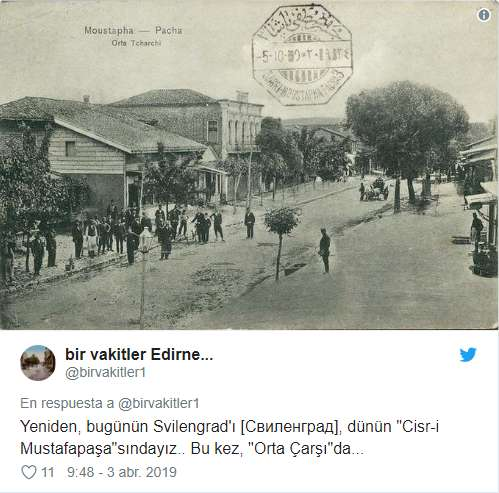
Mon revolver est à la vue de tous, à sa place habituelle ; mais ils ne lui prêtent aucune attention, ni ne me posent une litanie de questions sur mes connaissances linguistiques, où je vais, d'où je viens etc... mais jettent simplement un oeil à mon passeport, comme si son examen n'était de toute façon qu'une formalité secondaire, me serrent les mains et en souriant demandent à me voir rouler sous leurs yeux.
Il commence à pleuvoir peu après que j'ai laissé Mustapha Pacha, ce qui me force à chercher refuge sous une opportune galerie d'écoulement des eaux sous la route. Je ne suis sous cet abri que depuis quelques minutes quand je me retrouve en compagnie de trois Turcs basanés, qui, en route vers Mustapha Pacha à cheval ont trouvé ce même abri. Ces individus montrent tout de suite leur étonnement de me trouver moi et le bicycle sous la galerie, d'abord en échangeant entre eux des commentaires ; puis se tournant vers moi et bombardant de questions turques ma tête consacrée (baptisé (chrétien), contrairement aux Turcs musulmans), me faisant presque perdre mes esprits avant que je m'échappe. Ils sont, bien sûr, complètement incompréhensibles pour moi ; si l'un d'eux pose une question, un haussement d'épaules fait qu'il la répète encore et encore, chaque fois un peu plus fort et un peu plus décidé. Certains moments ils sont tous trois à me soumettre des questions tous en même temps, jusqu'à ce que je commence à penser qu'il y a complot pour me faire mourir sous les paroles et me prendre toutes les choses de valeur que j'ai sur moi. Ils ont tous les trois un long couteau passé dans la ceinture, et, au lieu de désigner les pièces du bicycle les uns aux autres avec le doigt, comme des gens civilisés, ils utilisent pour cela ces longs couteaux de méchante allure [[ Ndt : il s'agit vraisemblablement de couteaux ottomans nommés yatagan, en usage du milieu du 16e siècle à la fin du 19e siècle, d'une longueur de 60 à 80 centimètres, qui étaient largement en usage en Turquie ottomane et dans les régions sous son influence immédiate, telles que les Balkans. Ils se portaient généralement glissés sous la ceinture en tissu du vêtement commun à l'époque ]].
Deux yatagan ottomans
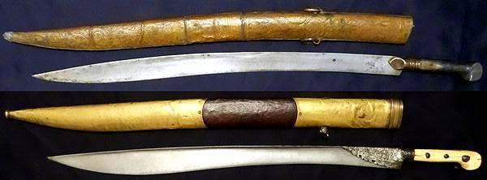
Source
Habitants musulmans d'Edirne vers 1873
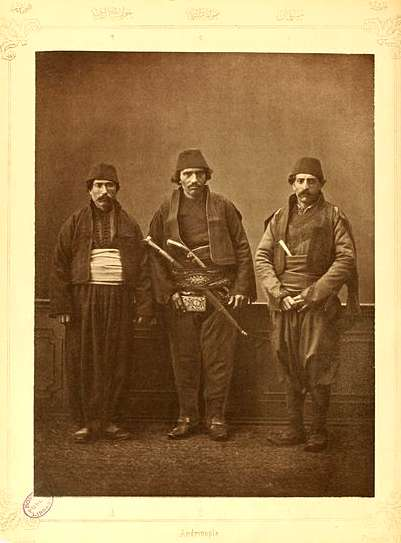
Source : WikipediaDomaine public
Ce peut être une clique de bandits endurcis pour ce que j'en sais ou peux en juger de leur aspect général, et au regard de ce désavantage évident d'un contre trois dans un coin si exigu, je me soustrais autant que possible de leur voisinage immédiat en me rapprochant d'un bout de la galerie. Ils sont probablement plutôt honnêtes, mais comme leur stock de questions semble inépuisable, au bout d'une demi-heure je prends la résolution de faire face aux éléments et tenter ma chance de trouver un autre abri plus loin que d'endurer plus longtemps leurs assauts vociférants. Ils sortent tous les trois pour voir ce qui va se passer et je n'ai pas honte d'admettre qu'avant de monter en selle je reste à bricoler autour du bicycle sous la pluie battante plus longtemps que nécessaire, dans le but de les faire rester dessous et se faire tremper, si possible, comme vengeance pour m'avoir pratiquement évincé de la galerie, et comme j'ai un imperméable et qu'ils n'ont rien de la sorte, mon plan réussit en partie.
La route est du même macadam ancien et laissé à l'abandon, mais entre Mustapha Pacha et Adrianople soit ils font plus ou moins semblant de l'entretenir ou alors le traffic est suffisant pour empêcher les mauvaises herbes de pousser, et je peux me mettre en selle et rouler malgré l'averse. Après avoir roulé environ deux miles j'arrive à une autre galerie que je considère pour m'assurer s'il convient de m'y abriter. Ici, également, je me retrouve gratifié d'une compagnie, mais cette fois c'est un vacher seul, qui est soit trop obtus et trop bête pour faire quoi que ce soit sauf jeter un coup d'oeil à moi et au bicycle alternativement, soit sourd et muet, et ma récente aventure me rend circonspect de lui donner envie d'utiliser sa langue. Je suis forcé par la pluie de rester coincé dans cette étroite galerie jusqu'à ce qu'il fasse presque nuit, et alors de me traîner dans une zone de pierres et de trous d'eau vers Adrianople, ville au sud-est dont j'ignore à quelle distance elle se trouve. Pendant que je progresse lentement dans l'obscurité, dans l'espoir d'arriver à un village ou une mehana, je remarque un feu d'artifice dans le ciel au loin et conjecture qu'il s'agit de l'emplacement d'Adrianople ; il est évident qu'il y a encore beaucoup de kilomètres et de fatigue pour y arriver ; je ne peux rouler vu la lumière diffuse de la lune voilée de nuages, et j'ai déjà bien roulé sur de mauvaises voies à travers cette région accidentée, presque toute la journée contre un fort vent contraire, dès la pointe du jour. A dix heures j'arrive avec satisfaction dans une zone de la région qui n'a pas été affectée par la pluie de l'après-midi, et, aucune mehana ne faisant son apparition, je décide de me contenter de l'évocation morne et sans joie du pain noir et des poires à moitié mûres que j'ai eus pour dîner à un petit village et me traîne sous des haies de pruniers [[Ndt : des pruniers non cultivés poussent spontanément dans beaucoup de régions d'Europe et de Turquie]] pour passer la nuit.
Quelques miles à rouler sur de très belles routes, le matin suivant, m'amènent à Adrianople [] Ndt : Adrianople (ou Andrinople) est le nom que portait autrefois la ville d'Edirne, située en Turquie dans la province du même nom ]], où, à l'Hôtel Constantinople, je me fais servir un excellent petit-déjeuner d'agneau rôti, la seule pièce de viande correctement cuite que j'aie mangée depuis Niš. Il a plu tous les jours sans exception depuis que la pluie m'a arrêté tout un dimanche à Bela Palanka, et ce matin ça recommence pendant que je suis en train de prendre le petit-déjeuner et ça continue en une averse torrentielle pendant une heure. En attendant de voir comment le temps va évoluer, je flâne dans les rues sinueuses et mystérieuses, observant le spectacle animé des bazars et faisant de mon mieux pour rassembler quelqu'information sur la valeur des différentes pièces, car je dois encore me débrouiller avec un mélange confondant des précédents pays, et une fois de plus, ici c'est un changement complet. Medjidis, cheriks, piastres et paras prennent la place des francs serbes, bulgares et une liste étourdissante de pièces de nickel et de cuivre, y compris une dont je crois qu'elle pourrait à peine servir pour payer un cure-dent en bois. La première nommée est une grande pièce en argent qui vaut quatre francs cinquante ; la cherik peut être évaluée à un quart de dollar ; quant aux piastres et paras ce sont des jetons, le premier vaut environ cinq cents et le dernier il en faut neuf pour faire un cent. En Turquie même, il n'y a pas de pièces de cuivre, la plus petite pièce est appelée « monnaie de métal », c'est une composition de cuivre et d'argent, dont la valeur varie de celle d'une pièce de cinq paras jusqu'à cinq piastres.
Les Adrianopolitans, attirés à l'hôtel par le magnétisme du bicycle, sont décidés à me voir rouler d'une façon ou d'une autre, et vu leur ignorance tout à fait naturelle de la chose, ils me demandent de le faire dans la petite cour rudimentairement pavée de l'hôtel et toute sorte d'endroits impossibles. Je secoue la tête en signe de dénégation et pour signifier l'impossibilité d'accéder à leur requête, mais malheureusement Adrianople est à l'intérieur des limites où un mouvement de tête est compris comme « oui, bien sûr ; » la foule joyeuse fait cercle autour d'un espace ridiculement petit, et souriant d'un air approbateur à ce qu'elle voit comme ma bonne volonté à lui faire plaisir, me fait signe d'avancer. Après ça une justification semble tout à fait hors de question et je conclus que la manière la plus rapide et la plus simple de satisfaire chacun est de montrer ma bonne volonté en me mettant en selle et de tanguer dans cet espace, ne serait-ce que quelques tours de roue, ce que par conséquent je fais sous la rotonde en bois, au risque imminent de me cogner le crâne contre des poutrelles et des chevrons.
Moi-même et le bicycle étant le centre d'attention d'une populace des plus outrageuse, à onze heures je décide de tenter un départ, alors que je suis en train de pousser le bicycle dans les rues boueuses vers les faubourgs. Arrivé dans une rue où il est possible de monter en selle et de rouler sur une courte distance, je le fais dans l'espoir de satisfaire la curiosité de la foule et qu'on me laisse quitter la ville dans un calme et une solitude relatifs ; mais cet espoir se révèle vain, car seul les éléments respectables de la foule se dispersent, me laissant, isolé et tout seul, au milieu d'une populace hurlante, la racaille d'Adrianople, qui continue bruyamment, criant et vociférant « bin ! bin ! » (monte, monte) et « "chu ! chu ! » (roule, roule) le long des rues impraticables. C'est la pire foule que j'aie rencontrée de tout le voyage sur deux continents, et, arrivé à une rue dont l'aspect semble relativement prometteur, je monte en selle et m'élance en avant en vue de distancer ces gens si possible ; mais rouler cent mètres sans mettre pied à terre serait une performance exceptionnelle à Adrianople après la pluie et je découvre bientôt que cette tentative a été une erreur, car, alors que je me mets en route, la foule sous l'excitation devient sauvage et tumultueuse, lance ses fez rouges dans les roues, se précipite derrière moi et donne des impulsions brusques au bicycle dans son impatience de le voir aller plus vite et plus d'une pierre vient en bondissant le long de la rue, lancée vicieusement par quelque jeune sauvage incapable de se contenir. Je décide rapidement de calmer la surexcitation en mettant pied à terre et de pousser le bicycle la distance qu'il faudra, jusqu'à ce que la populace se fatigue de suivre.
Cependant, cette manoeuvre ne rencontre guère l'assentiment de la foule ingérable, plusieurs viennent au-devant de moi et exhibent des pièces de dix paras pour m'inciter à rouler de nouveau, tandis que des gamins attardés déferlent autour de moi, et, mettant le majeur et l'index de leur main droite à cheval sur leur main gauche, pour illustrer et souligner ce qu'ils veulent, vocifèrent « bin ! bin ! chu! chu! monsieur ! (en français dans le texte) » et autres paroles plus persuasives, qui, si on pouvait les comprendre, diraient problablement en substance, que, bien que ce soit une coutume consacrée et un privilège de la populace d'Adrianople de lancer des pierres et autres compliments similaires à ces incroyants du monde extérieur qui viennent chez eux d'une manière qui attire tellement l'attention, ils renonceraient, avec des égards, à leur privilège pour cette fois si seulement je « bin ! bin ! » et « chu ! chu ! » On chercherait vainement ici cet aspect de malice inoffensive qui caractériserait une foule de jeunes occidentaux dans une circonstance similaire, leurs visages portent cette expression déterminée des gens bien décidés à saisir la seule opportunité de leur vie. Des Turcs convenables se tiennent sur le trottoir et observent le bicycle avec curiosité, mais ils regardent avec une suprême indifférence mon évidente irritation d'être suivi par une populace telle que celle-ci, comme le fait également un gendarme (en français dans le texte original) qui passe, que j'arrête, et lui explique par gestes ma désapprobation de ce qui est en train de se produire. Comme les civils, il n'y prête aucune attention mais fixe avec curiosité le bicycle et pose une question, dont la signification restera à jamais pour moi un mystère.
Adrianople (aussi appelée Andrinople), autrefois
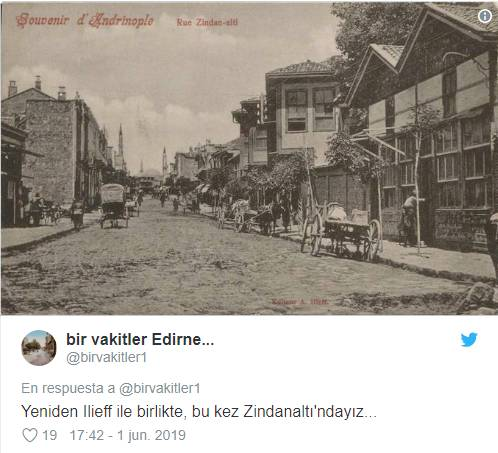
Une fois complètement hors de la ville la route est tout à fait correcte sur plusieurs kilomètres et je suis gratifié d'un cri unanime d'admiration de la part d'une foule rustique à une mehana dans les faubourgs, parce que je distance un cavalier parmi eux qui s'est mis en selle pour me rattrapper. À Adrianople ma route quitte la vallée de la Maritza et mène au travers des plateaux onduleux des plaines de l'Adrianople, parcours accidenté et au revêtement médiocre sur la plus grande partie. J'arrive au village de Hafsa peu après midi où une foule de Hafsanites enturbannés ou coiffés du fez et de soldats vêtus du grossier uniforme de l'armée régulière prennent quasiment possession de moi ; leur « bin ! bin ! » ne me laisse aucun moment de répit jusqu'à ce que je consente à faire étalage de mes modestes capacités avec le bicycle en allant et venant le long d'une section praticable de la rue principale. La population est enchantée. De solides vieux Turcs me donnent une tape dans le dos d'un air approbateur et le propriétaire de la mehana nous porte presque, moi et le bicycle, dans son établissement. Ce personnage est complètement confus à cause du mastic, qui l'incline à la tyrannie et à l'excès de zèle ; plusieurs fois dans l'heure qui suit, alors que j'attends que l'inévitable averse se calme, il chasse péremptoirement tant les civils que les militaires de la cour de la mehana ; mais la foule s'y infiltre de nouveau en moins de deux minutes. Soudain, pendant que je suis en train de déjeuner, je regarde par la fenêtre et découvre que le bicycle a disparu. Je me précipite dehors et trouve le propriétaire ivre et un autre individu en équilibre instable en train de monter un escalier raide, portant entre eux la machine jusqu'à une pièce à l'étage, où les gens n'auront aucune chance de la voir. Deux minutes plus tard ses mêmes dispositions fantaisistes et capricieuses le poussent à retirer les comestibles de ma table et avec les façons d'un showman, il m'emmène en douceur à l'écart et me demande de rouler de nouveau pour le plaisir de la foule qui se trouve là, à laquelle il y a deux minutes, il déniait arbitrairement le droit de seulement regarder le bicycle. Rien ne serait plus normal que de refuser de rouler dans de telles conditions ; mais la foule à l'air tellement contente du changement d'attitude si soudain et si inexplicable du propriétaire qu'il semble recommandable si je veux pouvoir terminer mon repas en paix de faire un autre petit tour ; d'autre part il vaut toujours mieux accepter de bonne grâce ces petits désagréments.
Ma route d'aujourd'hui est la suite de celle au macadam sans maintenance, dont j'ai souvent constaté que les pierres couvertes de mauvaise herbe m'aidaient à franchir des endroits où les routes de terre ordinaires étaient recouvertes de boue. Malgré cette état de néglicence présent depuis longtemps, il arrive que je trouve des portions praticables, mais chaque pont et passage souterrain ont été détruits, et un berger soucieux, pas loin de Hafsa, qui depuis un tertre à proximité m'observe descendant une longue déclivité vers une de ces voies inondées, crie presqu'à s'en casser la voie, et gesticule désespérément pour attirer mon attention sur le danger devant moi. Peu après je suis la cause innocente que deux petits mulets de bât, lourdement chargés, tentent d'échapper à leur conducteur qui marche derrière eux. En fait l'un d'eux réussi à s'échapper, et, bien que son chargement soit trop lourd pour qu'il puisse même essayer de courir, il va maladroitement sur la plaine ondoyante, comme incertain en son for intérieur d'agir de façon sensée ou non ; mais son compagnon de servitude est moins fortuné, et se retrouve sur le dos sur sa large et lourde charge, les pattes battant désespérément l'air. Je m'arrête pour aider le conducteur à remettre sur pieds le mulet écroulé, et cet individu me demande de le dédommager pour l'accident ; du moins est-ce ce que j'en juge par la fréquence du mot « medjedie », pendant qu'avec colère puis avec regret il désigne le chargement couvert de boue et la position malheureuse et néanmoins risible du mulet ; mais je ne vois aucun lien raisonnable entre la frayeur injustifiée de ses mulets et le contenu de mon portefeuille, notamment parce que je roulais sur le macadam ancien et abandonné par le sultan, alors que lui et ses mulets suivaient un chemin de terre à l'écart. Comme il semble, et de loin, plus préocupé d'obtenir de moi une satisfaction en argent que de secourir le mulet de sa position sens dessus dessous, je me sens parfaitement dans mon droit, après lui avoir montré à plusieurs reprises ma volonté de l'aider, de le laisser là et de poursuivre mon chemin. Les plaines de l'Adrianople sont une étendue morne de pâturages ondoyants, sillonnés de petits marécages avec leurs aires adjacentes cultivées. Il n'y a pas d'arbres le long de cette route et les villages qui se présentent à intervalles de huit ou dix miles sont des groupes dispersés de baraques boueuses, aux toits de chaume, au milieu desquelles s'élève parfois le minaret effilé d'une petite mosquée, cette mosquée étant, bien sûr, le premier signe au loin d'un village. Entre Adrianople et Eski Baba (Il s'agit de Babaeski. Ref : Wikipedia https://tinyurl.com/Eskibaba), la ville où j'arrive à la nuit, il y a trois villages, dans l'un desquels je me rapproche d'une maison particulière turque pour boire de l'eau et surprends les femmes le visage dévoilé. Dés qu'elles voient ma tête qui regarde dans l'entrée elles poussent aussitôt de petits cris de désarroi et filent comme des faons effrayés dans une pièce adjacente. Quand les hommes apparaissent, pour voir ce qui se passe, ils ne montrent aucun signe de ressentiment pour mon intrusion soudaine, mais l'un d'eux rejoint les femmes dans la pièce et des paroles fortes, énervées semblent indiquer qu'elles sont sévèrement réprimandées pour s'être laissé surprendre de la sorte. Toutefois, cela n'empêche pas les femmes de réapparaître la minute qui suit, leurs visages voilés par l'orthodoxe yashmak, à travers l'ouverture permise duquel elles satisfont leur curiosité féminine en nous examinant d'un oeil critique moi et mon étrange machine.
Quatre hommes me suivent à cheval hors de ce village, sans doute pour voir quel usage je fais de la machine ; tout au moins je ne vois pas d'autre explication à l'honneur de cette étroite et déplaisante attention, étroite, dans la mesure où ils maintiennent les museaux de leurs chevaux presque contre mon dos, malgré divers subterfuges pour me débarrasser d'eux. Quand je m'arrête ils font de même, quand je me remets en route ils me suivent posément, toujours trop près pour que me sente à l'aise. Ce sont tous les quatre des paysans de rude aspect et leur but est inexplicable, à moins qu'ils ne soient en train de le faire par pure entêtement, ou peut-être avec la vague idée de me provoquer à faire quelque chose qui leur servirait de prétexte pour m'attaquer ou me voler. La route est sufffisamment peu fréquentée pour inciter à ce genre d'action. S'ils sont seulement en train de me suivre pour voir ce que je fais avec le bicycle, ils ne s'en retourneront que peu éclairés, vu que tout ce qu'ils voient c'est moi poussant le bicycle et à l'occasion raclant la boue qui s'y accumule. Au bout d'environ deux miles, quel que soit leur but, ils y renoncent.
Il tombe plusieurs averses au cours de l'après-midi, mon avancée en résulte ralentie et sans plaisir et j'arrive à Eski Baba juste avant la nuit, où je suis agréablement surpris de trouver une mehana, dont le propriétaire est une personne au comportement raisonnable. Depuis que je suis en Turquie, les gens bien élevés sont bigrement rares, la majorité paraissant être bruyants et entêtés. Ce qui semble le plus préoccuper les Turcs des villages profonds, en plus du bicycle, est si j'ai un passeport ; quand j'entre à Eski Baba, un gendarme aux barrières du poste de police me crie de m'arrêter et de produire mon « passaporte ». Il devient assommant de présenter mon passeport à presque chaque village, et, vu que je vais rester ici au moins pour la nuit, j'ignore l'injonction du gendarme et roule jusqu'à la mehana. Deux gendarmes sont bientôt sur place et s'enquièrent si j'ai un « passaporte » ; mais quand ils apprennent que je ne vais pas plus loin aujourd'hui ils ne prennent pas la peine de l'examiner, le fonctionnaire turc moyen croit avec dévotion en le principe de ne rien faire aujourd'hui qui puisse être reporté au lendemain
Les natifs des villages profonds de Turquie ne sont guère familiers des journaux et sont en conséquence profondément ignorants, ont peu de conception des choses sauf de ce qui leur est familier et constitue leur environnement quotidien ; l'apparition du bicycle est une étrange visitation, quelque chose entièrement au delà de leur entendement. Toute la soirée la mehana est envahie d'une foule de Turques et de chrétiens gesticulant sauvagement, se querellant et commentant bruyamment. Bien qu'il semble y avoir une grande proportion d'infidèles originaires d'Eski Baba aucune femme n'est visible dans les rues ce soir ; de ce que j'observe le jour suivant, j'estime que c'est un village mulsuman conservateur, où les femmes turques, en plus d'être voilées avec une stricte othodoxie, sortent rarement et les femmes qui ne sont pas mahométanes ont assimilé quelque peu l'esprit renfermé de la population dominante et se tiennent aussi très en retrait.
Un groupe d'une vingtaine de chiens, grands et petits, et de toutes conditions possibles de misère, se rassemblent dans la rue principale d'Eski Baba à la tombée du jour, attendant impatiemment avec des regards affamés n'importe quel morceau de nourriture ou d'abat qui d'aventure se trouverait à leur portée. Les Turcs. il faut le porter à leur crédit, ne maltraitent jamais les chiens ; par contre chaque mâle « chrétien » semble considérer de son devoir de leur donner un coup de pied ou de leur jeter une pierre, et il passe rarement une minute pendant toute la soirée sans le cri de quelqu'infortuné bâtard. Ces gens semblent prendre plaisir aux souffrances d'un chien ; un paysan insensible qui au cours de la soirée donne des coups de pied si brutal à un bâtard à moitié mort de faim que le pauvre animal en fait une attaque, et, après avoir chancelé et brinquebalé dans toute la rue s'écroule presque mort, est le héros de commentaires admiratifs de la part de la foule, qui regarde les souffrances de la créature avec délice. Observer qui donnera le coup de pied le plus dommageable aux chiens semble le passe-temps commun de la population masculine des infidèles d'Eski Baba et tout un chacun parait attentif et enchanté quand quelqu'animal infortuné est soumis à un traitement particulièrement sévère.
Une natte de jonc sur le sol de l'étable constitue mon lit cette nuit, en compagnie d'une douzaine de natifs d'aspect bizarre, pour éviter la promiscuité desquels je me rapproche dangereusement des pattes arrières d'un âne, et à moins de deux mètres de l'endroit où la progéniture de ce même animal est étendue avec l'insouciance de l'extrême jeunesse. Je ne profite que peu du précieux sommeil, par la faute d'innombrables puces qui prennent des libertés avec mon corps. Une colonie florissante d'hirondelles qui habite dans le toit entretient un incessant gazouillis, et vers le lever du jour deux muezzins, un sur le minaret de chacune des deux mosquées tout près, qui commencent à appeller les fidèles à la prière et crient « Allah ! Allah ! » avec les voix d'hommes attachés à accomplir conscieusement leur devoir en se faisant entendre par chaque musulman à deux kilomètres à la ronde, me dérobent même la brève heure de repos qui suit en général une nuit blanche.
Il pleut encore abondamment dimanche matin – en fait, la dernière semaine a été la plus pluvieuse que j'aie jamais vue en dehors d'Angleterre – et considérant l'état des routes au sud d'Eski Baba, les perspectives apparaissent opportunes pour expérimenter ce qu'est un dimanche dans un village de la Turquie profonde. Les hommes sont solennellement accroupis en cercle sur les bancs de la mehana, fumant les narguilés et sirotant des petites tasses d'un café noir épais, me considérant d'un air interrogatif pendant que je dévore un substantiel petit-déjeuner ; que ce soit à cause de la singularité d'assister au repas d'un cycliste, ou la singularité de voir qui que ce soit manger comme je suis en train de le faire, si tôt le matin, je suis incapable de le dire ; car personne d'autre n'a l'air de prendre de nourriture solide jusqu'à environ midi. Tout le long de la matinée, un fourmillement de gens m'importunent avec des « Bin, bin, bin, monsieur ! » Le bicycle est enfermé dans une pièce à l'arrière, et par esprit de conciliation à trois reprises je vais le chercher et entreprends d'apaiser leur curiosité en roulant sur une portion d'une centaine de mètres de route en bon état à l'arrière de la mehana ; mais leur importunité ne cesse ni l'espace d'un instant. Finalement le harcèlement devient si insupportable que le propriétaire a pitié de ma figure épuisée, et, après s'être adressé sur un ton furibond à la foule, m'enferme avec le bicycle.
Des barreaux de fer protègent les fenêtres à l'arrière des maisons à Eski Baba, mais avant même que je me sois étendu sur ma natte plusieurs faces basanées apparaissent aux barreaux, et plusieurs voix entonnent simultanément ce chorus appréhendé « Bin, bin, bin, monsieur ! bin, bin ! » me forçant à fermer, au milieu d'une chaude journée – la pluie ayant cessé vers dix heures – la seule petite ouverture qui ventile la petite pièce étouffante. Un moment de tranquilité est absolument hors de question, car, même la fenêtre fermée, des visages regardent continuellement à l'intérieur, impatients de saisir le plus petit aperçu de moi ou du bicycle. Le destin est aussi contre moi aujourd'hui, de toute évidence, car avant que j'aie été enfermé une heure dans la pièce la porte est déverrouillée pour laisser entrer le « mulazin » (lieutenant de gendarmerie) et deux de ses subordonnés, avec de longues épées de cavalerie suspendues le long de leurs jambes, selon les usages de la police turque.
En plus d'embrouiller leurs cerveaux mous avec mon passeport, mon étrange moyen de locomotion et tout ce qui me concerne en général, ils ont maintenant, à ce qu'il me semble, exercé leur esprit au point de vouloir se mêler de mon revolver. Mais avant tout ils veulent voir mon extraordinaire prestation de faire rouler une chose qui ne tient pas debout toute seule. Après avoir donné satisfaction aux gendarmes et à la foule assemblée en roulant une fois de plus, ils me retournent la faveur en m'escortant avec égard au quartier général de la police, où, après avoir passé plus ou moins une heure à examiner mon passeport, ils mettent ce document et mon revolver dans leur coffre-fort et avec nonchalance me font un geste d'au revoir. De retour à la mehana j'y trouve un pacha corpulent [[ Ndt : dans l'Empire ottoman un pacha était un gouverneur de province ou un titre honorifique donné à certaines personnalités. Ref : cnrtl.fr https://tinyurl.com/pasha-turc ]] et un certain nombre de Turcs particulièrement influents en train d'attendre mon retour, avec le même dessein diabolique de me demander de « bin ! bin ! » Peu après les deux prieurs mahométans arrivent, avec la même requête ; c'est certainement pas moins d'une demi-douzaine de fois dans l'après-midi que je sors le bicycle et roule, par égard pour l'insatiable curiosité de "l'indicible" Turc ; à chacun de ces moments mon audience consiste non seulement en les personnes qui en ont fait alors la requête, mais en toute la population masculine gesticulante. Le propriétaire de la mehana prend aimablement sur lui de me faire savoir quand mes visiteurs sont des gens d'importance, par une pantomime où il se courbe en fonction de leur prestige, procédé qui lorsqu'il a affaire au pacha est une performance remarquable pour un homme qui n'est pas contorsionniste professionnel.
À une occasion dans l'après-midi je tente d'écrire, mais je pourrais aussi bien tenter de voler, parce que la mehana est pleine à craquer de gens qui n'ont tout simplement pas le plus petit sens des convenances. Finalement un jeune trop dynamique jette un fez sur mon flacon d'encre , il s'en trouve renversé, et s'il ne s'était agi d'un accessoire pratique, hors duquel l'encre ne peut se répandre, mes notes auraient été ravagées [[ Ndt : il existait nombre de marques et de modèles d'encriers de voyage du milieu du 18e au début du 20e siècle. La photo que nous reproduisons ci-dessous est d'un modèle typique de cette période. De petite taille (ils tiennent dans le creux de la main, ils étaient finement réalisés, souvent gainés de cuir, de diverses formes (cubiques, cylindriques, ovoïdes etc...) et contiennent un tout petit flacon d'encre. Une recherche sur google victorian travelling inkwell permet d'en voir de nombreux modèles. Également sur cette page : yorewrite.info https://tinyurl.com/encriers ]].
Encrier de voyage, époque victorienne
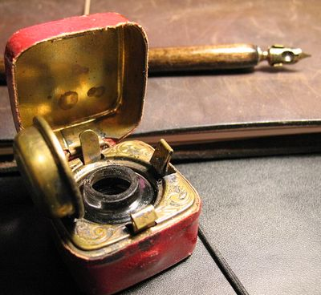
Source : galerie de Robert Burdock sur Flickr
Fin du chapitre 8
Page précédente - Page suivante (chapitre 9, à venir)
ADMINISTRATIVIA
Dernière mise à jour de cette page : 05 juin 2019
URL : https://orkic.github.io/bicygonzo/atwoab/chap8/index.html
Contactez-nous : Contact
Website © Copyright - ef. Bicy Gonzo.